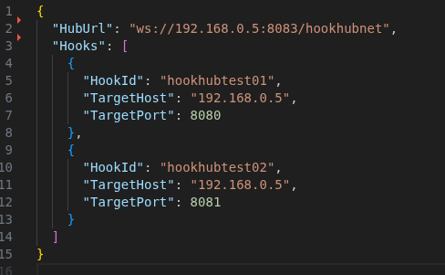

About
HookHubNet is a tunneling system that enables secure forwarding of TCP traffic through WebSocket connections. It consists of a central hub that manages connections from multiple hooks, each forwarding traffic to backend services. The system allows exposing local services securely without direct network exposure, ideal for development, testing, and secure remote access scenarios.
Features
- WebSocket-based tunneling for TCP traffic
- Dynamic port assignment for hooks
- Concurrent tunnel management
- REST API for hook management
- Configurable backend targets
- Simple configuration via appsettings.json
- Cross-platform (.NET 10, Linux/Windows/Mac)
- Lightweight, no external dependencies
Tech Stack
Language
C#
Frameworks
.NET 10, ASP.NET Core
Libraries
System.Net.WebSockets, System.Net.Sockets
Other
No external services required
Usage
Getting Started
- Clone:
git clone https://github.com/mrodriguex/hookhubnet.git - Build:
dotnet build HookHubNet.sln - Run Hub:
dotnet run --project HookHubNet.Hub - Run Hook:
dotnet run --project HookHubNet.Hook
Configuration
- Configure
appsettings.jsonin each project. - Set
HubUrlandHooksarray in HookHubNet.Hook for hook IDs, target hosts, and ports. - Environment variables can override settings.
API Examples
- Get all hooks:
curl http://localhost:5000/hook/getall - Get hook info:
curl http://localhost:5000/hook/get/webhook - Remove hook:
curl http://localhost:5000/hook/remove/webhook
WebSocket Usage
- Hooks connect via WebSocket:
ws://localhost:5000/hookhubnet?id=webhook - TCP traffic to the assigned port is forwarded to the hook's backend.
Manual Testing
- Start the hub and verify WebSocket acceptance.
- Connect a hook and check port assignment.
- Send TCP traffic to the assigned port and verify forwarding to the backend (e.g., with
telnetornc).
Visual Demo



API Overview
Key endpoints:
- Get all hooks:
GET /hook/getall - Get hook info:
GET /hook/get/<hookid> - Remove hook:
GET /hook/remove/<hookid>
See README for request/response examples.
Contact
Maintainer: Manuel Rodríguez Camacho